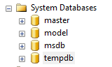
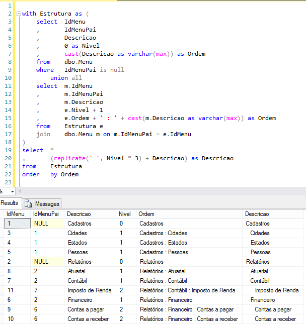
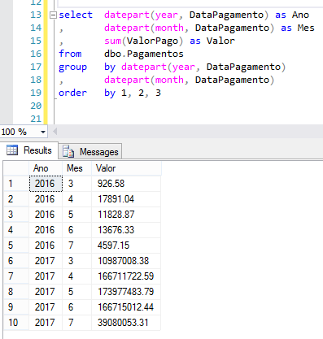
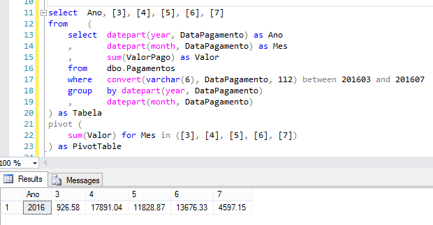
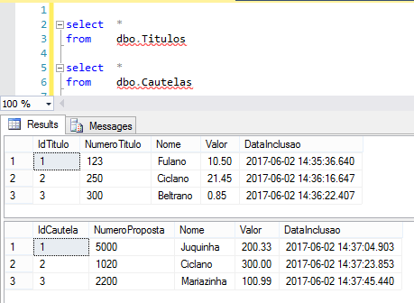
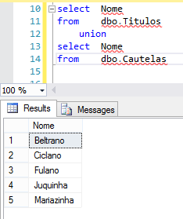
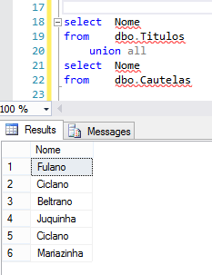
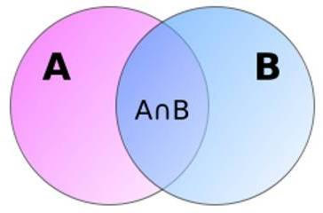

SQL Server
O Microsoft SQL Server é um SGBD
Sistema gerenciador de banco de dados relacional desenvolvido pela Microsoft.
* criado em 1988
Objetivo

Componentes
• Tabelas (entidades)• Registros (tuplas) - inst√¢ncia de uma tabela
• Colunas (atributos)
• Chaves (prim√°ria e estrangeira)
• Relacionamentos
• Views
• Procedimentos e fun√ß√µes
• Triggers (gatilho)
• √çndices
• Estat√≠sticas
Índice
• Estrutura em disco associado a uma tabela ou view
• Agiliza a recupera√ß√£o das linhas
• √çndices criados inadequadamente e a falta de √≠ndices s√£o as principais fontes de afunilamentos
EXEMPLO - CEP

B-Tree
Como funciona?

Intervalo

Exemplo

Curiosidades
Consulta para 50 linhas
em até 6 passos.
Consulta para mais de 1 bilh√£o de linhas
em até 30 passos.
Complexidade O(logN) - 2^30 = 1.073.741.824 bilh√£o
Árvore Balanceada (folhas com profundidade aproximada)
proporcional à altura da árvore.
Opções
ASC e DESC
Praticamente indiferente em pesquisas
Diferença em ordenação por mais de um campo
Clustered e NonClustered
Ordem de armazenamento em disco
Vantagem pesquisa e desvantagem escrita
PK é clustered - só é permitido um por tabela
create nonclustered index NomeIndice on Tabela (Campo1 asc, Campo2 desc);
Quando
• Campos de boa seletividade (5% - 10%)
• Evitar campos com muita altera√ß√£o
• Criar √≠ndices em FK
• √çndice Composto > V√°rios √çndices Simples
• Evitar Full Table Scan*
Composto
select Nome, Sobrenome from Clientes where Nome = 'Chico' and Sobrenome = 'Bento';
Criar um índice composto ( Nome, Sobrenome ) é melhor que criar um índice para cada campo
Resumo
Vantagens
• Acesso aos dados reduzido
• Traz dados espec√≠ficos de forma mais r√°pida
• Acesso de dados ordenados sem o custo da ordena√ß√£o
Desvantagens
• Piora performance em escritas (insert e update)
• Aumenta o consumo de mem√≥ria e disco
• Necessidade maior de manuten√ß√£o
• Pode diminuir a performance de consultas
- Quando retornamos muitos dados da tabela
- Quando volume de dados pequeno (adicionamos 1 etapa)
Escrevendo queries otimizadas
• L√≥gica de Conjuntos > L√≥gica de Procedimentos
• Teste varia√ß√µes de queries objetivando a performance
• Evite QUERY HINTS (comum em Oracle)
• Use subqueries correlatas
select * from Tabela where Campo = 123;
Tabelas Tempor√°rias
#Local
Visibilidade restrita, conex√£o atual
##Global
Visíveis por todas as conexões
if ( exists ( select top 1 1 from Tempdb..SysObjects where Name like '##TabelaTemporaria%' ) ) begin drop table ##TabelaTemporaria; end;
TempDB
create #Tabela ( campoA varchar(16), campoB int ) create ##Tabela ( campoA varchar(16), campoB int ) select p.Nome , p.DataNascimento into #Tabela from Pessoas p where p.Sexo = 'M'Tabelas temporárias permitem criação de índices. 
Vari√°veis de Tabela• Escopo: conex√£o atual em tempo de execu√ß√£o
• N√£o permitem cria√ß√£o de √≠ndice
• Dificuldade de debug
declare @Tabela table ( campoA smalldatetime, campoB int ) insert into @Tabela (campoA, campoB) select nf.DataEmissao , inf.Codigo from NotasFicais nf join ItensNotaFical inf on nf.IdNotaFiscal = inf.IdNotaFiscal
Qual usar?
Necessito de estatísticas e plano de execução eficientes?
Tabelas temporárias - possuem estatísticas
Variáveis de tabelas - não possuem estatísticas
Geralmente procedimentos (procedure) utilizam plano de execução em Cache, com o uso de tabelas temporárias é forçada uma nova compilação.
N√£o utilize vari√°veis de tabela
para armazenar mais de 100 linhas
WITH common_table_expression• CTE - express√£o de tabela comum
• Pode ser utilizada com SELECT, INSERT, UPDATE e DELETE
• Muito usado para recurs√£o


char, nchar, varchar e nvarchar
| Tipo | Unicode | Tamanho |
|---|---|---|
| nchar | Sim | Fixo |
| nvarchar | Sim | Vari√°vel |
| char | N√£o | Fixo |
| varchar | N√£o | Vari√°vel |
• fixo reserva o espa√ßo de mem√≥ria mesmo que n√£o seja utilizado
• vari√°vel ocupa o espa√ßo do que foi utilizado
• unicode representar e manipular, de forma consistente, texto de qualquer sistema de escrita existente
RAISERROR
begin try declare @result INT set @result = 55/0 --Divide-by-zero error end try begin catch --Get the details of the error --that invoked the CATCH block declare @ErMessage nvarchar(2048) , @ErSeverity int , @ErState int; select @ErMessage = ERROR_MESSAGE() , @ErSeverity = ERROR_SEVERITY() , @ErState = ERROR_STATE(); raiserror (@ErMessage, @ErSeverity, @ErState) end catch --RESULT: --Msg 50000, Level 16, State 1, Line 16 --Divide by zero error encountered.
THROW
begin try declare @result int set @result = 55/0 --Divide-by-zero error end try begin catch throw end catch --RESULT: --Msg 8134, Level 16, State 1, Line 3 --Divide by zero error encountered.
begin
print 'BEFORE RAISERROR'
raiserror('RAISERROR TEST',16,1)
print 'AFTER RAISERROR'
end
--RESULT:
--BEFORE RAISERROR
--Msg 50000, Level 16, State 1, Line 3
--RAISERROR TEST
--AFTER RAISERROR
begin print 'BEFORE THROW'; throw 50000,'THROW TEST',1 print 'AFTER THROW' end --RESULT: --BEFORE THROW --Msg 50000, Level 16, State 1, Line 3 --THROW TEST
Comandos de totalização



PIVOT e UNPIVOTTransforma linhas em colunas e vice-versa.

PIVOT

Coluna Calculada
• √â uma coluna virtual.• N√£o est√° fisicamente armazenada na tabela *PERSISTED*
• Se baseia em dados que j√° existem.
• DEFAULT, FOREIGN KEY e NOT NULL - n√£o pode ser usada
ALTER TABLE dbo.Produto ADD ValorTotal AS (Quantidade * ValorUnitario * 1.5)
  


Recapitulando
• UNION - combina resultados = distinct + order by• UNION ALL - combina resultados (mais r√°pido)
• EXCEPT - Um conjunto menos o outro
• INTERSECT - Igual nos dois

• Insert, Update e/ou Delete - tudo junto e reunido
merge dbo.Titulos as T using @Tab as S on (T.IdTitulo = S.IdTitulo) when matched and (T.Nome != S.Nome) then update set T.Nome = S.Nome when not matched by Target then insert (NumeroTitulo, Nome, Valor, DataInclusao) values (999, S.Nome, 0, getdate()) when not matched by Source then delete output $action, DELETED.IdTitulo as TargetIdTitulo, INSERTED.IdTitulo as TargetIdTitulo;
WITH (NOLOCK)
• SQL Server 2000 - a pr√≥pria Microsoft recomendava o uso do NOLOCK• O uso indiscriminado do With(Nolock) pode gerar erros transit√≥rios.
• SELECT em conjunto com UPDATE e/ou DELETE
• SQL Server 2005/2008 - solu√ß√£o mais elegante
READ COMMITTED SNAPSHOT
• Configura√ß√£o do banco de dados e n√£o necessita altera√ß√£o em c√≥digo.
• Mant√©m as vers√µes em tempdb.
PRIMARY KEY
UNIQUE KEY
| Primary Key | Unique Key | |
|---|---|---|
| NULL | N√£o | Sim |
| INDEX | Default clustered index | Default non-clustered index |
| LIMITE | 1 | 1 ou + |
*Ambos n√£o permitem valores duplicados
Exemplo tabela de Pessoas : Primary Key Id - Unique Key CPF
| DateTime | DateTime2[(n)] | |
|---|---|---|
| Min Value | 1753-01-01 00:00:00 | 0001-01-01 00:00:00 |
| Max Value | 9999-12-31 23:59:59.997 | 9999-12-31 23:59:59.9999999 |
| Storage Size | 8 Bytes | 6 to 8 bytes |
| Usage | Declare @now datetime | Declare @now datetime2(7) |
| Current Date | GetDate() | SYSDATETIME() |
| +/- days | Works select getdate() + 1 |
Fail - need to use only DateAdd function select dateadd(day, 1, sysdatetime()) |
Check Constraint
• Integridade dos dados• Evita tabela de dom√≠nio
• Exige cuidado e manuten√ß√£o
ALTER TABLE dbo.Pessoa
ADD Sexo char(1) CHECK ( Sexo in ('M', 'F') )
ALTER TABLE dbo.Produto ADD Validade int CHECK ( Validade >= 1 and Validade < 13 )
Otimizador de Consultas
Estatísticas
Número de registros, índices, chaves e cardinalidade das tabelas.
Plano de Execução
Menor custo (CPU e IO) e tempo.

Boas Pr√°ticas 01
• Normalize - basicamente divida tabelas grandes em tabelas menores e remova redund√¢ncia
• Evite tabelas resultado ou totalizadoras
• Utilize transa√ß√µes, v√°rios problemas podem ocorrer
• Evite a utiliza√ß√£o do SELECT * - traga somente o que for utilizar
• INSERT - espec√≠fique os campos inseridos
insert into dbo.Tabela (Campo1, Campo2) select Valor1, Valor2 from dbo.OutraTabela
Boas Pr√°ticas 02
• Evite uso de cursores - podemos usar vari√°vel de tabela (l√≥gica de conjunto)
• Tratamento de erros TRY e CATCH
• Usar o THROW ao inv√©s de RAISERROR
• Usar JOIN ao inv√©s de SUB-QUERIES
• Usar ORDER BY, DISTINCT e TOP somente quando necess√°rio
• Em geral EXISTS e IN s√£o mais eficiente que NOT EXISTS e NOT IN
Moldar a consulta para usar o mais eficiente
Boas Pr√°ticas 03
• Utilize o EXISTS em conjunto com o SELECT TOP 1
• Utilize o EXISTS ao inv√©s de COUNT para teste de exist√™ncia
• EXISTS p√°ra a execu√ß√£o quando encontra o primeiro e o COUNT continua a execu√ß√£o at√© o √∫ltimo registro
if ( exists ( select top 1 1 from dbo.Pagamentos )) begin print 'ok' end• Quando usar LIKE procure utilizar:
where Campo LIKE '%Fula%' --não usa índice where Campo LIKE 'Fula%' --usa índice
Boas Pr√°ticas 03.1
• Usar o @@ROWCOUNT e @@ERROR ap√≥s a execu√ß√£o de um comando
insert into dbo.Cidades (Nome)
values ('Porto Alegre')
, ('Cachoeirinha');
select @@rowcount;
--RETURN:
--2
select @@error;
--RETURN:
--0
Boas Pr√°ticas 03.2
• Usar o scope_identity() ap√≥s uma inser√ß√£o para retornar o identity
insert into dbo.Titulos (NumeroTitulo, Nome, Valor, DataInclusao)
values ('987654321', 'Juca', 55.25, sysdatetime())
select scope_identity();
--RETURN:
--4
• Usar with(nolock) ao inv√©s de (nolock)Ser√° descontinuado, pode virar alias, d√° erro em hint composto
• Ao inv√©s de where idade > 3 use where idade >= 4 *se o campo possuir √≠ndice
• Usar ";" para fechar um comando
Boas Pr√°ticas 04
• Usar o EOMONTH - buscar o √∫ltimo dia do m√™s
select sysdatetime(); --2017-06-05 10:10:11.7864377 select eomonth(sysdatetime()); --2017-06-30
• Evitar SQL din√¢mico - o plano de execu√ß√£o do procedimento n√£o ser√° reutilizado
declare @sql varchar(max) , @tabela varchar(32); set @tabela = 'dbo.Cautelas'; set @sql = 'select Nome from ' + @tabela + ' where NumeroProposta = 1020;'; exec (@sql);
Boas Pr√°ticas 05
• Evite usar operadores de convers√£o em campos com √≠ndices (ele n√£o ser√° utilizado)